Trace ta ligne. Tiens le monde.
Gratuit · macOS et Windows · Solo, campagne et réseau local
Projet personnel, sans but commercial, ouvertement inspiré d'OpenFront (lui-même inspiré de Territorial.io), avec sa propre direction artistique. Entièrement vibe-codé avec Claude Opus 5.5.